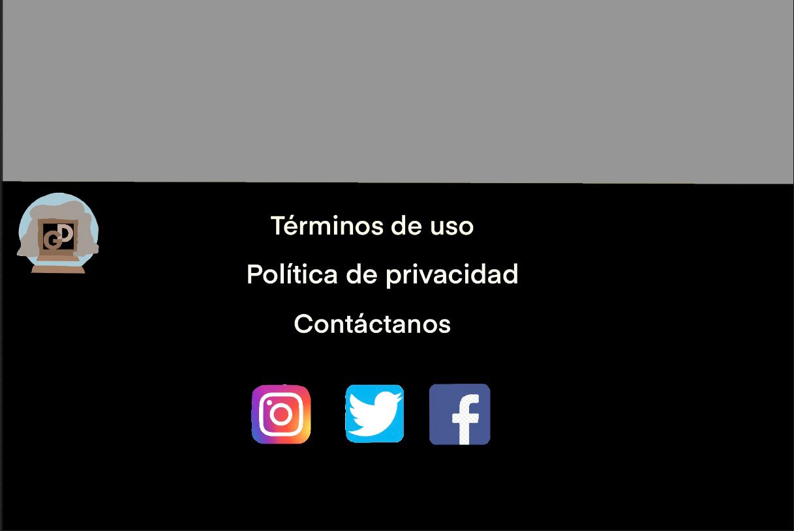
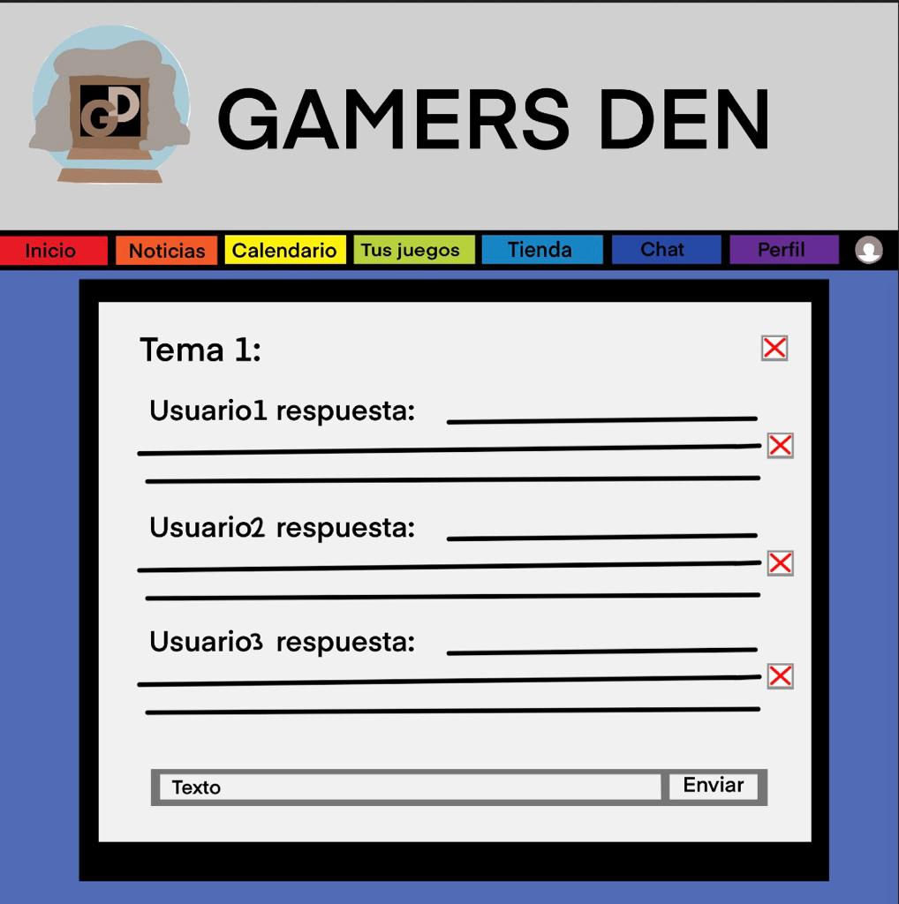
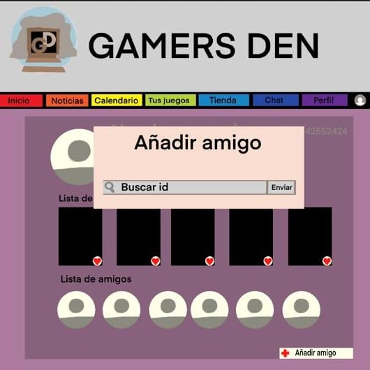

Esta sería nuestra pagina de inicio, la que se abriría al pinchar en el enlace de nuestra página, aquí se vería toda la infomación destacada de nuestra pagina web y podríamos ir al resto de las funcionalidades.
Aquí podemos ver el footer de nuestra página con un enlace a los términos de uso, la política de privacidad y contáctanos (que les mostrará nuestro gmail de empresa), luego enlaces a nuestras redes sociales.

La página de noticias, nada mas entrar nos mostrará una o varias noticias destacadas, junto a un buscador en el que podremos buscar noticias tanto por nombre como por nuevo, popular...
Los administradores y escritores son los únicos que tendrán acceso a esta sección desde el panel de noticias generales. En esta podrán rellenar los distintos recuadros (título, subtítulo, encabezado, resumen y texto) para crear una noticia.

De la misma manera al entrar en una noticia concreta veremos el artículo completo. Este tendrá una disposición estándar con un título, subtítulo, imágenes propias, etc ... Además solo los administradores o escritores podrán utilizar los dos botones de la esquina para editar (entrando en el panel presentado anteriormente) o borrar la noticia.

En el Calendario mostraríamos todos los lanzamientos y eventos de juegos, anuncios, y las notcias del apartado anterior indexadas por fechas dentro del calendario.
En el Calendario los usuarios podrán añadir nuevos eventos particulares solo para ellos, rellenando la fecha a futuro, el título del evento, y un comentario.

La página de Tus Juegos es únicamente informativa, esta nos mostrará en un principio la lista de juegos que el cliente ha marcado, seguido de un buscador en el que encontraremos juegos tanto por nombre como por dispositivos, tipo de juego...

Los administradores y escritores son los únicos que tendrán acceso a esta sección desde el panel de juegos generales. En esta podrán rellenar los distintos recuadros (nombre, dispositivos disponibles y texto) para crear un juego.

Cada juego tendrá su propia sección particular donde encontraremos distinta información sobre el tipo de juego, dispositivos en los que jugarlo... Además podremos marcar cada juego con el corazoncito arriba a la derecha de la imagen para luego encontrarlo en la sección de tus juegos en el panel de juegos general y en el perfil del usuario. Por último al final del juego habrá un botón que te lleve a su respectiva sección en la tienda.

La tienda de segunda mano, nos muestra una serie de juegos con disponibilidad de compra, todos estos juegos han sido previamente anunciados por los usuarios de nuestra página.
Al seleccionar un juego, nos llevará a otra página en la que podremos ver el juego concreto junto a su vendedor, precio, imágenes, y descripción del estado. Se encontrarán dos botones en ella, uno que lleve a la página del juego en concreto en Tus Juegos y otro botón que nos mande a un chat con el vendedor.


En este panel cualquier usuario registrado podrá poner un producto a la venta. Primero, deberá elegir una categoría, en este caso lo organizaremos por juego y deberá rellenar los distintos paneles.
Además solo un administrador podrá borrar el producto usando el botón de la papelera arriba a la derecha.
El foro es una zona de encuetro, discusión y/o debate, detro de Gamers Den, en la que nuestros usuarios podrán crear o hablar sobre los temas que les apetezca dentro del mundo de los videojuegos, se contará también con un buscador y una lista con los temas destacados.
Dentro de cada tema, los usuarios registrados podrán escribir sus opiniones interactuando unos con otros de forma pública. Además el moderador podrá vetar a un usuario o incluso borrar un tema entero.
En esta sección los usuario podrán chatear de forma privada con amigos exclusivamente, además aquí se encontrarán redireccionados los chats con los vendedores.
La página del perfil, se mostrará la información del usuario seleccioando, junto a su rol/es, su lista de deseos, su nombre, una imagen de perfil, sus amigos, y en el caso de que tuviera, se mostrarían los juegos que tiene en venta.
En esta sección podremos añadir nuevos amigos.
Este será el inbox de cada usuario, aquí le llegarán las solicitudes de amistad, mensaje de compra de tus anuncios, notificaciones del calendario y foro.